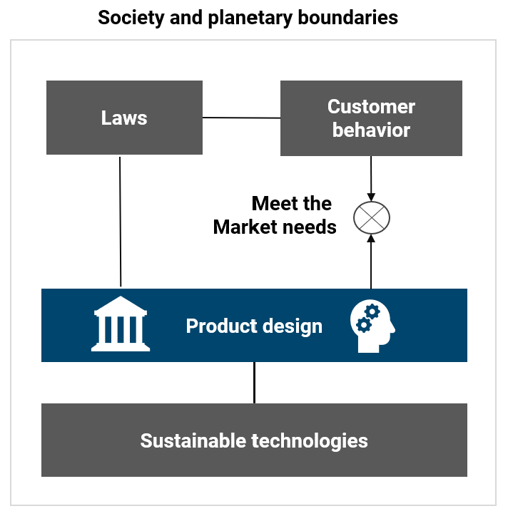

About used
Used ist eine gemeinnützige Open-Source-Community von intrinsisch motivierten Entwicklern, Designern, Ingenieuren, Forschern und Bürgern der Welt. Wir glauben, dass Nachhaltigkeit eines der zentralen Themen unserer Zeit ist. Unser Ziel ist es, die Lebensgrundlagen zukünftiger Generationen unter sozialen Bedingungen zu sichern. In einer globalen Konsumgesellschaft ist unsere Idee, dass Produktdesign ein vielversprechender Ausgangspunkt für eine nachhaltige Entwicklung ist.
Observation
Nicht nur Ingenieure in technisch fortgeschrittenen Industrieländern schaffen neue Dinge. Menschen entwickeln Produkte für andere Menschen und/oder für sich selbst in irgendeiner Form. Gleichzeitig beeinflussen die Entwickler als Kunden die Marktnachfrage, als Wähler die Ordnungspolitik und als Mitarbeiter im Unternehmen das Marktangebot. Die Beeinflussung der Nachhaltigkeit ist also keine einfache Angelegenheit, denn es müssen Fähigkeiten vorhanden sein, um zwischen den verschiedenen Rollen des Einzelnen in der Gesellschaft zu vermitteln.
Mission
Wir wollen Entwickler dazu befähigen, nachhaltige Produkte und Geschäftsmodelle zu schaffen, indem wir den Diskurs zwischen Entwicklern und Forschern aus verschiedenen Disziplinen in der weltweiten Gemeinschaft unterstützen. Indem wir Menschen, Technologie und Organisationen durch ein wertneutrales Open-Source-Framework verbinden und den Diskurs durch unser Netzwerk konstruktiv anregen, wollen wir die Voraussetzungen für die Entwicklung gemeinsamer Wertestrukturen schaffen.
Vision
Mit unserer Open-Source-Community haben wir dazu beigetragen, ein globales Verständnis für die Entwicklung nachhaltiger Produkte und Dienstleistungen zu fördern.
used Framework
In einer globalen Konsumgesellschaft ist unsere Idee, dass Produktdesign ein vielversprechender Ansatzpunkt für die Beeinflussung der nachhaltigen Entwicklung ist. Das used-framework ist ein Diskursmodell der Community zur Entwicklung nachhaltiger Produkte und Geschäftsmodelle. Der Fokus liegt dabei auf allen Arten von Produkten und Geschäftsmodellen. Das used-framework setzt dort an, wo Veränderungen in der nachhaltigen Entwicklung durch Diskurse stattfinden.
Es sind Gesetze, die das gesellschaftliche Verständnis von Nachhaltigkeit widerspiegeln. Märkte bringen die Bedürfnisse der Kunden und die Angebote der Unternehmen zusammen. Und die Entwicklung der Technik ermöglicht neue nachhaltige Innovationen. (Meier, 2005)
Das used-framwork zielt darauf ab, den Diskurs über Vernetzung, konstruktive Anregung, Bewertung und Bedingungen für Wertschöpfung in der Community, in Unternehmen und in allen Bereichen der Gesellschaft zu fördern. Die strategischen Ziele und Themenschwerpunkte werden grundsätzlich von der Community bestimmt. Die folgenden Themen sollen Orientierung für die Entwicklung von marktfähigen Produkten und Geschäftsmodellen geben. Die Gestaltung erfolgt durch die Projekte in der Kommune.
In der Wissenschaft gibt es viele Erkenntnisse zur Produktgestaltung, die wir ebenfalls nutzen werden. Allgemeine Modelle wie die VDI-Richtlinie 2221 (VDI 2221, 2019), das Zyklusmodell von Gausemeier (Gausemeier, 2014) oder das Mensch-Technik-Organisationsmodell nach Strohm (Strohm, 1997) bieten eine wertvolle Grundlage.
Hinweis: Die genannten Quellen finden Sie unter dem Reiter Quellen.

© used.community